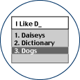

|  |
Word PredictionWord prediction technology is used to assist with text entry. These software packages predict the word you are typing and the next word based on word frequency and context. |
Index
This list of products and resources is for reference purposes only and does not reflect endorsement by the ATRC.
Description
Word prediction technology is used to assist with text entry. These software packages predict the word you are typing and the next word based on word frequency and context. They may also include features such as spell checking as you type, speech synthesis, and hotkey's for frequently used words. Word prediction is particularly useful for slow typists, probe or pen users, and people with minor visual impairments or dyslexia.
Points to ponder - Questions to consider when shopping for word prediction software
- Does it learn new words automatically?
- Is the word choice arrangement in alphabetical order or statistically weighted?
- Does it predict both words and phrases?
- Does it predict by grammar and usage?
- Does it automatically capitalize the first word in the sentence?
- Can dictionary entries be altered?
- Does it speak finished text?
Windows
- Applied Human Factors' "SoothSayer Word Prediction" for Windows 95/98, Windows 2000, and Windows NT
- Help U Type
- Stand alone word prediction software for Windows 3.1
- From World Communications,
Phone: (501) 656-0911,
Fax: (501) 656-3005
- Telepathic 2000
- Predicts ahead, provides abbreviation expansion and hot keys for selecting words, auditory feedback. For Macintosh and Windows
- From Madenta Communications, Inc.
- "Aurora" for Windows 3.1 and Windows 95
- A word prediction package with Face to Face communication options
- Works with Microsoft Works, WordPerfect, Microsoft Word, Lotus WordPro, WordPad, Write
- From Aurora Systems Inc. Vancouver, BC
- "EZ Keys for Windows"
- Word prediction for Windows 3.1: with auditory feedback and face to face communication chat window
- From Words+, Inc,
- Gus! Word Prediction
- Uses both "word completion" and "word prediction" based on user's word usage history
- For Windows 95
- From Gus Communications, Inc.
- "textHELP!"
- Word prediction software for Windows 3.1 that integrates predictive typing, speech as you type and real time spell checking
- Works in conjunction with your normal Windows word processor, spreadsheet or database
- Includes a small screen magnification, also can speak selected text
- Specifically designed for use in education for the support of students with dyslexia
- Available from Lorien systems
- Word Q available from the Bloorview-Macmillan Children's Centre.
- used along with standard Windows word processing software.
- Transparent to all Windows applications.
- Fully integrated text-to-speech feedback
- Now has a separate speech recognition plugin, Speak Q.
- WriteAway 2000 from The Institute on Applied Technology of The Boston Children's Hospital and Information Services Inc. (our apologies, the link to this product has been removed as the company's website has been hacked)
- word processor with built-in word prediction
- variable vocabularies and frequency settings
- various built-in text to speech options
- KeyREP - from Prentke Romich Co. (PRC) (Product has been discontinued)
- [from their web page] - "Type the first few letters of a word. A prediction list appears from which you select the word you want. KeyREP then types the word into whatever application you are using. Prediction are based on the letter(s) typed, personal preference, and how frequently words are used."
- Co:Writer for Windows is available from Don Johnston Incorporated
- HandiWord - manufactured by Microsystems Software Inc.
- Typing Assistant
Typing Assistant is designed to integrate the features of word prediction, text expander, clipboard manager and application launcher.
Macintosh
- EZ Kyes/Key Wiz
- A keyboard assistance program that provides Keyboard control, Dual Word Prediction , Abbreviation expansion with the full names and Speech output while running standard software
- From Words+, Inc
Resources
If Word Prediction Can Help, Which Program Do You Choose? by Jamie Klund, MS, OTR, Sun Prairie Public Schools